-

- 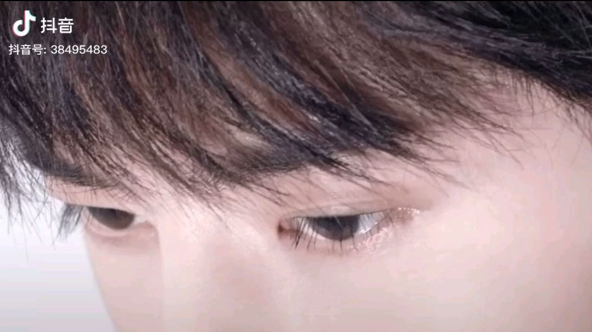
-
公认最"坏牙"的4种水果:它排第一,全吃过的敬你是条汉子!
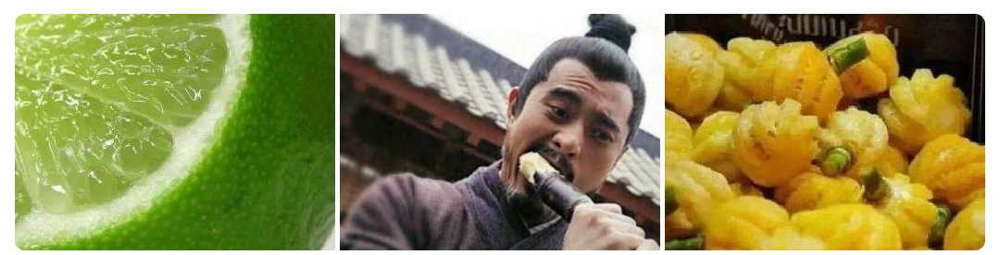酷酷娱乐谈 25评
-
同样是演"痞子",张一山A级,陈小春S级,最后一个隔着屏幕都觉得害怕!
兰姐看娱乐 201评
-
这些美食明明是中国菜,却因为名字,大部分人误认为是中国菜!
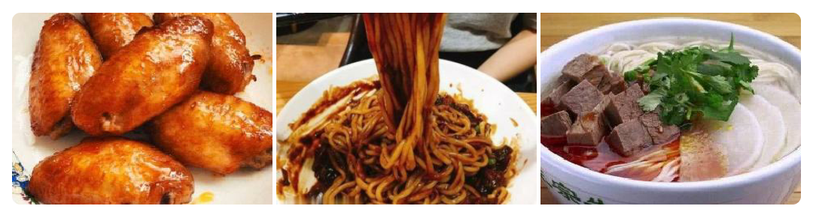柠檬美食 10评
-
绝地求生:暴露菜鸟和大神实力的选择,全选对肯定是资深老玩家
天青色等电影 16评
-
兄弟你的M4配件用对了么?该选垂直还是轻型,职业选手教你怎么选
天青色等电影 11评
-
猫只有感觉到愉悦的时候才会打呼噜?不,害怕的时候也会
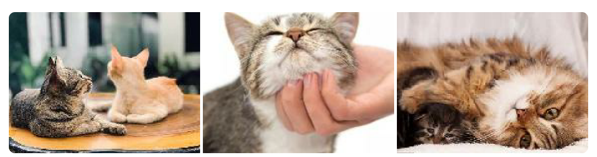
往昔云烟 1评
-
28皮肤碎片该换谁?年年有余手感一般,而它堪比史诗级皮肤
玫娱两三年 10评
-
心理学:凭第一直觉,哪个破盘子是假的?测你智商的高低!
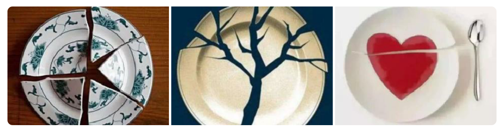社会扒一扒 6评
 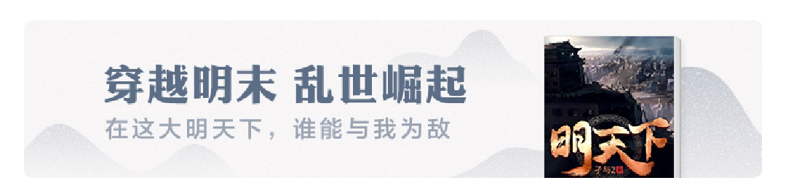
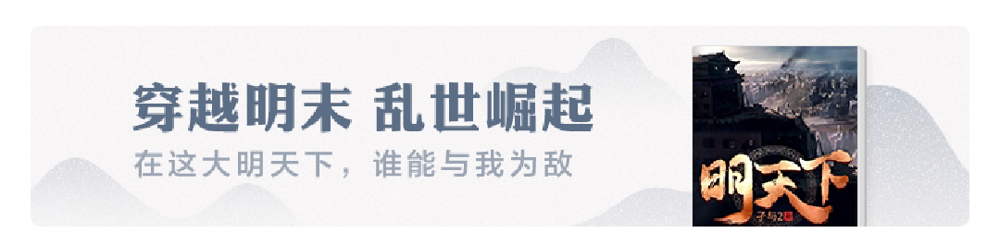
-
心理学:假如只有10块,你会买哪种小吃?测你什么时候能暴富!
牛牛聊吧 6评
-
穷吃VS富吃,馒头还好,泡面还好,看到饺子间的差距:想要有钱
酷酷娱乐谈 25评
-
这些美食明明是中国菜,却因为名字,大部分人误认为是中国菜!
柠檬美食 10评
-
吃牛排之前先给你一份面包,并不是服务员搞错了,别再因为不知道被嘲笑了

娱乐新天地君 26评
-
青岛市最土豪的餐厅一顿要多少钱?青岛市土豪餐厅完整"名单"及"排行榜"公示!
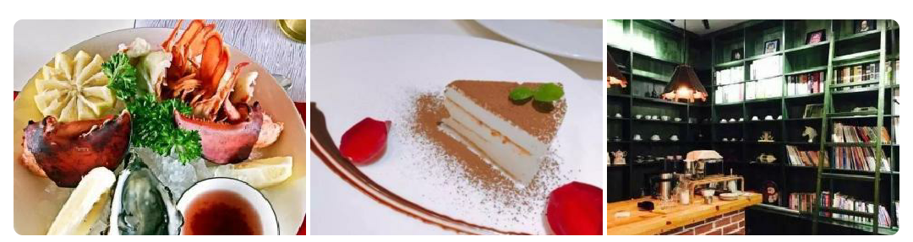与你倒数 9评
-
厨娘还原《海绵宝宝》的蟹黄堡,第一眼:好认真啊,成品:口水"流"出来了
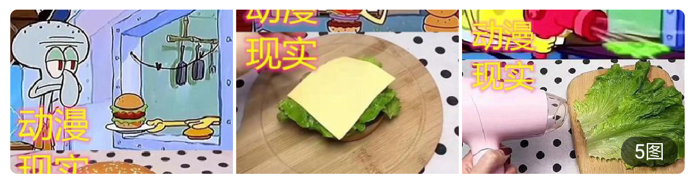闯荡世界 8评
-
肯德基员工揭秘:这4样食物可别点,小心老板当你"傻",量少味差不实惠

静若繁花花 4评
-
脾虚胃虚的,每天拿"它"当零食吃,修护胃粘膜,还能润肺止咳!
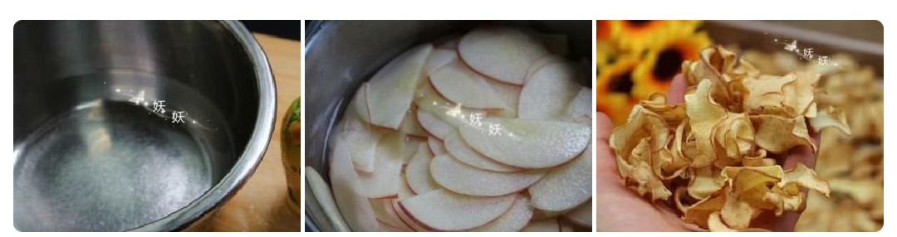美食杰营养课堂 5评
-
美国人痛恨的食物,在中国却成了美食,你吃过吗?

小望爱旅行 22评
-
公认最"坏牙"的4种水果:它排第一,全吃过的敬你是条汉子!
酷酷娱乐谈 25评
-
马云来真的了!花呗封号条件再次被确认,碰到就停封

风一样的女人职场说
-
那个和支付宝撞名的大爷,曾想起诉阿里,如今成了这样
可乐御风
-
同样是演"痞子",张一山A级,陈小春S级,最后一个隔着屏幕都觉得害怕!
兰姐看娱乐 201评
-
心理学:凭第一直觉,哪个破盘子是假的?测你智商的高低!
社会扒一扒 6评
-
5种生物死后的骨架,大熊猫是真的可怕,完全失去了生前的憨态
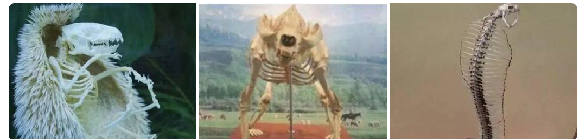大斌历史 790评
-
有种"整容"叫做活佛济公的必清,如今留长发戴眼镜,38岁像20岁

灼伤的心情 98评
-
女生:"我累了",钢铁直男才回"抱抱",试试这3回复打动她
碧海潮生生蝶梦 104评
-
《庆余年》中最神秘角色!毫无戏份,却凭一己之力带出四大宗师

伍脊六兽 85评
-
《家有儿女》10年前VS后,认出关晓彤,却没发现"寸头的包贝尔"!
撩汉漫画IL 86评
-
女生发"早呀",直男才回"早",高情商的人:看了文章就秒懂了
水清云淡一段浊 24评